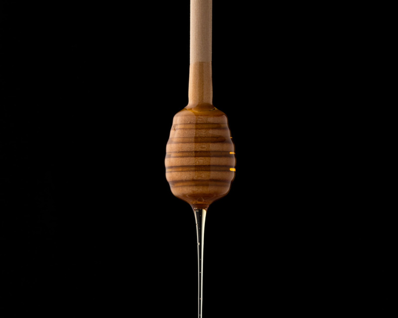

Все буде медово: світлі та темні сторони меду
З чого складається мед?
Якщо з меду випарувати всю вологу, то 95-97% сухого залишку складатимуть вуглеводи. Вони представлені головним чином простими цукрами – фруктозою і глюкозою. Їх співвідношення коливається від 0,4 до 1,6 і залежить від виду меду. Окрім них, хоч і значно в меншій кількості, присутні різноманітні дисахари, трисахари та олігоцукри.
Білкова складова меду представлена в основному ферментами та деякими амінокислотами, найбільше з яких – проліну.
Всупереч поширеній думці, у меді дуже небагато вітамінів і він не може розглядатися як цінне джерело саме вітамінів. Серед вітамінів, присутніх у меді, найбільше вітаміну С.
У меді присутнє широке різноманіття мінералів. Найбільше – калію. Однак чимало і важких металів, якщо пасіка знаходиться в не надто екологічно сприятливому регіоні.
Також у меді є чимало різноманітних компонентів з нудними назвами але потужними властивостями: флавоноїди, поліфеноли, алкалоїди, органічні кислоти, тощо.
Саме вони переважно зумовлюють оті всі "протимікробні, антиоксидантні, протизапальні, антипроліферативні і антиметастатичні" властивості меду.
До речі, антиоксидантні властивості меду обумовлені головним чином поліфенолами. У темнішому меді їх більше, відповідно темніший мед матиме вираженіші антиоксидантні властивості.
Про світлі сторони меду
Протимікробні властивості меду головним чином зумовлені ферментативною складовою, а саме присутністю глюкозооксидази. Іншими протимікробними факторами є різноманітні фітокомпоненти, які у широкому різноманітті представлені у меді.
Однак головна причина в тому, що ваша банка з медом не заростає пліснявою чи якоюсь слизовою плівкою зовсім не у ферментах чи фітокомпонентах, а у високому осмотичному тиску, низькому значенні рН та низькому вмісті білку. Тому мікроорганізми хоч і потрапляють у мед, однак розмножуватися там їм не так легко.
Спектр протимікробної активності меду дуже залежить від регіону, рослин, з яких зібраний мед, сезону та умов зберігання.
Є чимало досліджень, які свідчать про ранозагоюючі властивості меду, також є підстави розглядати цей продукт як субстанцію із протипухлинними та імуномодулюючими властивостями.
Попри те, що у меді багато цукрів, велику їх частку меду складає фруктоза, і дослідження справді вказують на корисність цього продукту для пацієнтів з діабетом.
Деякі дослідження показують зниження рівня гормонів стресу у жінок при споживанні меду. Справедливо додати, що при цьому піддослідні вживали меду таки чималенько – по 60 г щодня протягом двох тижнів.
У одному з педіатричних досліджень для лікування запальних проявів у ротовій порожнині мед показав кращі результати, ніж хлоргексидин. (Ми не можемо утриматися від свого коментаря і додамо, що це, однозначно, гуманніше по відношенню до маленьких пацієнтів)
Також мед є справді ефективним засобом при застудах та болю у горлі.
Споживання меду здійснює антиоксидантний ефект на показники крові.
У одному з досліджень було показано, що споживання меду у кількості 1,2 мг на кг маси щодня у другій половині менструального циклу демонструвало не гірші знеболюючі властивості, ніж прийом препаратів мефенамінової кислоти при дисменореї.
Про темні сторони меду
- Не можна забувати, що мед – то, насамперед, прості вуглеводи і джерело доданих цукрів . Тому надмірне його споживання буде виливатися у надмірну масу та сприяти глікаційним процесам у нашому організмі, у тому числі, й процесам старіння; Нагадаємо, що рекомендовані кількості споживання доданих цукрів у раціоні – не більше 50 г на добу, а ліпше 25 г;
- За деякими дослідженнями – до 10% протестованих зразків меду містять спори клостридій ботулізму . Вони не шкодять дорослим, але можуть спричинити ботулізм у немовлят. Саме тому рішуче не рекомендовано давати мед дітям до року.
- Як вже було згадано, якщо пасіка ближче ніж кілометри чотири (а саме на таку відстань переважно літають бджоли) від автостради чи якогось забруднюючого довкілля виробництва, то в такому меді буде підвищений вміст важких металів і користь від такого продукту буде вельми сумнівна.
- У рідкісних випадках мед може бути токсичним. Стається це тоді, коли якісь отруйні рослини у великій кількості квітнуть неподалік вуликів. У таких випадках бджоли можуть назбирати нектару та пилку і можна отримати мед із токсичними чи наркотичними властивостями. Така біологічно-хімічна зброя була чимало разів застосовано в історично-політичних ігрищах минулих тисячоліть. Наприклад, при вторгенні римських військ до Туреччини їх противники навмисне залишили у таборі мед, зібраний із квіток дерева рододендрону. Після споживання знахідки римляни програли бій, бо потруїлися і не могли навіть тримати зброю в руках.
Міфи і пабмед про гідроксіметилфурфурол
Навколо цього компоненту чимало часу точаться дискусії. Існує, наприклад, думка, що не можна додавати в гарячий чай мед, бо він набуває канцерогенних властивостей. Насправді не набуває, але антибактеріальні властивості при цьому знижуються, бо руйнуються ферменти. Що ж стосується гідросіметилфурфуролу, то він і справді зарекомендував себе як не надто корисна сполука із генотоксичними властивостями. Однак є кілька "але". Перше з них – вимірювання вмісту гідроксиметилфурфуролу у меді пов'язане не стільки із його потенційною шкодою при споживанні, а як використання інформації про його вміст, як маркеру дотримання правил зберігання меду та його якості. Адже у молодому меді практично немає гідроксіметилфурфуролу, тоді як з часом та при зберіганні за відвищеної вологості, температурі і дії світла (а також у металевій тарі) його вміст зростає. Згідно вимог ЄС, допускається вміст гідроксіметилфурфуролу 40 мг на кг меду і 80 – для тропічного меду.
Друге "але" – ми споживаємо гідроксиметилфурфурол із іншою їжею і в значно вищих кількостях. Його чимало у пластівцях, випічці та сухофруктах. Частка яку ми споживаємо із медом – нікчемно мала. Тому в плані кількості спожитого гідрометилфурфуролу – від старого меду чи медовика вам стане нітрохи не гірше, ніж від випічки в принципі.
Тому, як то кажуть, все добре, що в міру. І так, вибір меду – справа відповідальна!
